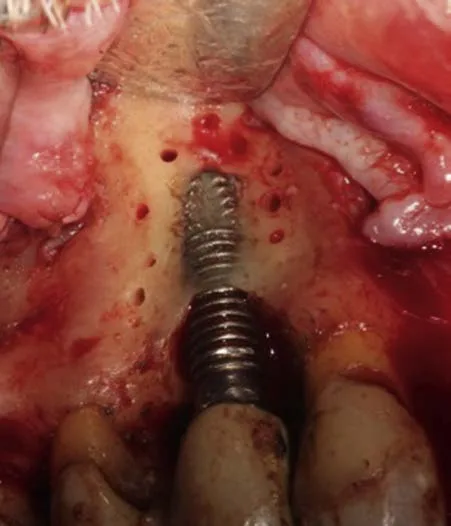
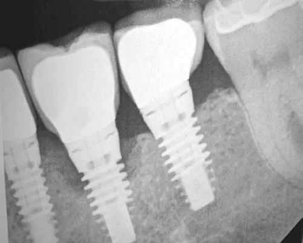

نسخه استخراجشده؛ ترجمه یا تأیید علمی انجام نشده است. وضعیت: captured
این درس یک عدد دارد که ارزش کل درس در آن است. اول زمینهاش:
عامل اول — سابقهی پریودنتیت. «بیشتر مطالعات بلندمدت و مرورهای سیستماتیک نتیجه گرفتهاند که بیماران با سابقهی پریودنتیت بروز بالاتری از پریایمپلنتیت در مقایسه با بیماران سالم پریودنتال داشتند.»
عامل دوم — سیگار. صادقانه باید گفت «اگرچه مطالعات متناقض بسیاری دربارهی رابطهی سیگار و پریایمپلنتیت وجود دارد، بیشتر گزارشها تفاوتهای آماری معنادار میان سیگاریها و غیرسیگاریها نشان دادهاند.»
و حالا عدد: یک مطالعه گزارش میکند «نرخ کلی پریایمپلنتیت در جمعیت مطالعهی آنها ۱۱٫۲ درصد بود و برای بیمارانی که سیگار میکشیدند و سابقهی پریودنتیت داشتند تا ۵۳ درصد میرسید.»
۱۱٫۲ به ۵۳. نزدیک به پنج برابر نرخ کلی.
و این عدد با اصل مهمی همخوان است: «عوامل خطر مختلف میتوانند در یک سناریوی بالینی بهصورت همافزا عمل کنند، که تعیین عوامل علّی را دشوارتر میکند.»
همافزایی یعنی چه؟ یعنی اثر دو عامل با هم، بیشتر از جمع اثر هرکدام بهتنهایی است. و پیامد عملیاش این است که نمیتوانی خطر بیمار را با جمع کردن سادهی عوامل حساب کنی.
عوامل سیستمیک دیگر: دیابت و بیماری قلبیعروقی هم در میان عوامل خطر سیستمیک نام برده شدهاند، و یادت باشد «درمانگر باید بر نقش بیماریهای سیستمیک و داروها بر رابط بافت نرم که میتواند به پریموکوزیت بینجامد مسلط باشد.»
و یک یافتهی جالب دربارهی فنوتیپ: دو فنوتیپ ایمپلنت وجود دارد که مستقیماً به پریایمپلنتیت مربوطاند، و «فنوتیپ مقاوم به پریایمپلنتیت عمدتاً در ماگزیلا یافت شد.» فنوتیپ مستعد، برعکس، با دندانهای کمتر و سن پایینتر همراه بود و بیشتر در مندیبل دیده شد.
نتیجهی عملی همهی اینها: «تاریخچهی پزشکی جامع باید برای هرگونه عامل خطر ارزیابی شود و بیمار باید از عوارض احتمالی مرتبط آگاه شود.»
یعنی ارزیابی خطر دو کارکرد دارد: تصمیم درمانی تو و انتخاب آگاهانهی بیمار.

سطح ایمپلنت بهعنوان عامل خطر: یک متاآنالیز را ببین: «یک متاآنالیز ۲۰ درصد موارد کمتر پریایمپلنتیت در ایمپلنتهای با سطح صاف در مقایسه با ایمپلنتهای با سطح زبر گزارش کرد.»
و «یک مرور سیستماتیک نشان داد که سطوح و قطر ایمپلنت عوامل خطر بالقوه برای از دست رفتن استخوان و پریایمپلنتیت هستند.»
اینجا باید دقت کنی که این با یونیت پیش چگونه جمع میشود. در یونیت پیش خواندی که «امکان تعیین اینکه نوع خاصی از سیستم یا سطح ایمپلنت با خطر بیشتری مرتبط باشد وجود ندارد». حالا یک متاآنالیز با عدد ۲۰ درصد کنار آن قرار میگیرد.
تناقض نیست؛ دو سطح از احتیاط است. دیدگاه نخست سختگیرانهتر است و نتیجهی قطعی نمیگیرد؛ دومی یافتهی یک متاآنالیز را گزارش میکند. و روش درست برخورد با چنین وضعیتی، دانستن هر دو موضع است نه انتخاب یکی — چون در گفتوگوی علمی، هر دو را خواهی شنید.
و یک نکتهی دیگر: شکست ایمپلنتهای با سطح زبر (مانند پوششدادهشده با هیدروکسیآپاتیت و پلاسما-اسپری استوانهای) به کمبود مخاط کراتینیزه نسبت داده شده است — یعنی سطح و بافت با هم عمل میکنند.
و مهمترین جملهی این بخش — دربارهی پیشگیری:
«یک مرور سیستماتیک تأیید کرد که پریایمپلنتیت ممکن است با یک برنامهی قوی نگهداری پریایمپلنت، در کنار ارزیابی جامع بیمار، بالینی و مرتبط با ایمپلنت پیشگیری شود.»
به ترکیب دقت کن: برنامهی نگهداری قوی + ارزیابی جامع. هیچکدام بهتنهایی کافی نیست.
و شروع پیشگیری از کجاست؟ «رویکرد پیشگیرانه با انتخاب ایدهآل و واقعبینانهی مورد، آموزش پیش از عمل بیمار، و کنترل عوامل خطر مرتبط با افزایش بروز عوارض ایمپلنت آغاز میشود.»
و نکتهای که بسیاری از آن غافلاند: «پروتکل مادامالعمر نگهداری حرفهای ایمپلنت باید به بیمار اطلاع داده شود و بهعنوان بخشی از فرآیند آموزشی پیش از جراحی او مورد تأیید قرار گیرد.»
«مادامالعمر» و «پیش از جراحی». یعنی تعهد به نگهداری باید پیش از کاشت گرفته شود، نه پس از آن. بیماری که این را نمیداند، در واقع به درمانی رضایت داده که تمام ابعادش را نمیشناسد.
و جایگاه این در دانش امروز روشن است: «پیشگیری از بیماری پریایمپلنت اکنون یک سنگبنای پذیرفتهشدهی راهبردهای درمانی مؤثر و قابلپیشبینی است.»
